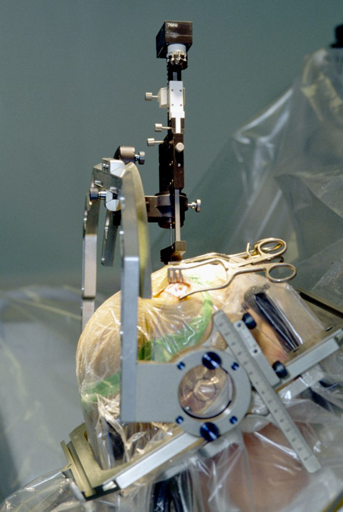

What it is
Neurosurgery is the specialty that treats diseases of the brain, spinal cord, nerves and spine with surgery. It is one of the oldest medical practices, going back to prehistoric trepanation, but modern neurosurgery was born in the early 20th century with Harvey Cushing, who reduced the mortality of brain operations from more than 90% to less than 10%.
What it treats
- Brain tumours and spinal cord tumours.
- Vascular disease: aneurysms, arteriovenous malformations, cavernomas, haemorrhages, carotid surgery (together with vascular surgery).
- Head and spinal injuries: haematomas, decompressive craniectomy, stabilisation.
- Hydrocephalus: shunts and endoscopic ventriculostomy.
- Spine: herniated discs and stenosis, cervical myelopathy, instability.
- Functional neurosurgery: deep brain stimulation, epilepsy surgery, pain surgery, spasticity (baclofen pumps).
- Peripheral nerves: carpal tunnel, brachial plexus injuries.
- Trigeminal neuralgia: microvascular decompression.
- Paediatric neurosurgery: malformations, spina bifida, Chiari, craniosynostosis.
Modern techniques
- Microsurgery: with an operating microscope and, increasingly, 3D exoscopes.
- Neuronavigation: a "GPS" that shows the position of instruments in real time on the patient's MRI.
- Awake surgery: to remove tumours near language or movement areas, checking their function during the operation with electrical stimulation, the method pioneered by Wilder Penfield.
- Intraoperative neurophysiological monitoring.
- Fluorescence with 5-ALA, which makes tumour tissue glow.
- Neuroendoscopy: through the nose for the pituitary and skull base, or inside the ventricles.
- Radiosurgery (Gamma Knife, linear accelerator): very precise radiation without opening the skull, for metastases, schwannomas, malformations and trigeminal neuralgia.
- MRI-guided focused ultrasound: precise lesions without an incision for tremor.
- Endovascular surgery (interventional neuroradiology): thrombectomy, embolisation of aneurysms and malformations.
- Robotics and minimally invasive surgery of the spine and brain haematomas.
Risks
All nervous system surgery carries risks: infection, bleeding, seizures, new neurological deficits, cerebrospinal fluid leaks. Modern techniques have greatly reduced them. The decision is shared, weighing the expected benefit against the risk of operating and of not operating.
Sources
- Bliss M. Harvey Cushing: A Life in Surgery. Oxford University Press; 2005.
- Hervey-Jumper SL, Berger MS. Maximizing safe resection of low- and high-grade glioma. J Neurooncol. 2016;130:269-82.
- Stummer W, et al. Fluorescence-guided surgery with 5-aminolevulinic acid for resection of malignant glioma. Lancet Oncol. 2006;7:392-401.
- Spanish Society of Neurosurgery. Patient information.